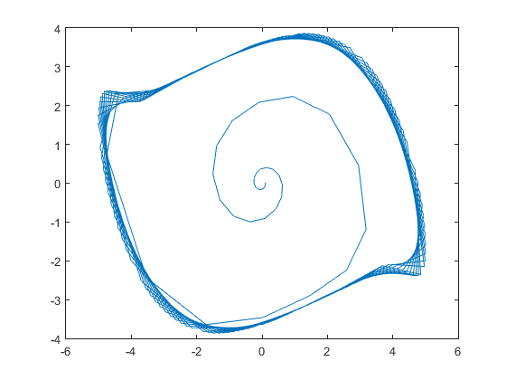
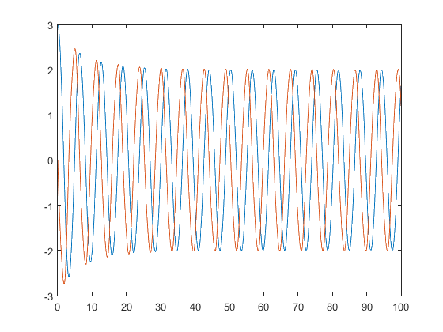
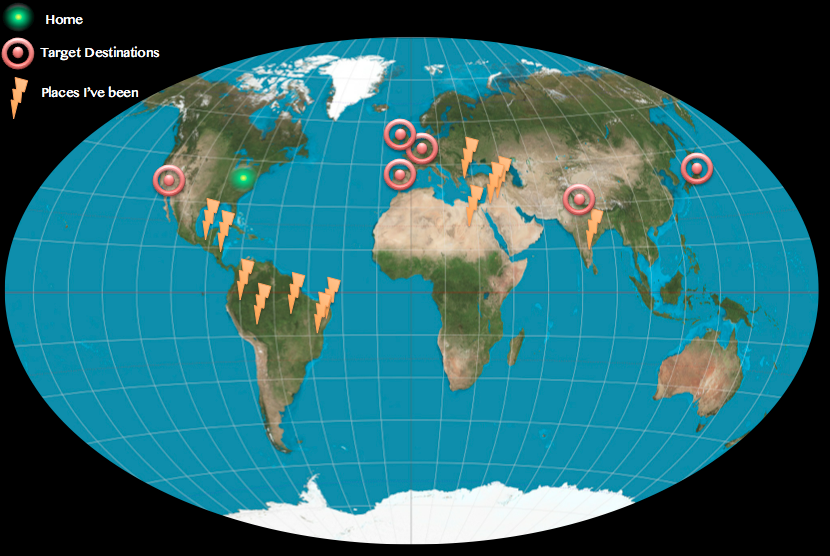
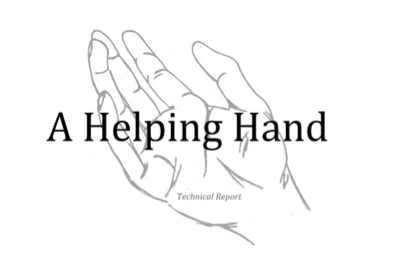

Visualizing Sound Waves
I wrote this JS Processing script to help visualize the counter-intuitive nature of standing wave patterns.
Where the Oceans of the creative soul
Crash against the Sands of knowledge
Is the chaos of my mind
Hey. Welcome to my first from-scratch website. I'm using foundation. I'll be gradually adding more stuff when the ocasion arises. I'm currently a Junior at Penn State University studying Engineering Science. This past summer I interned with Wipro Technologies in Bangalore, India and in the Spring I'm studying abroad in San Sebastian, Spain. Besides travelling, I enjoy running, playing piano, and a challenging math, engineering or coding problem.
I'm currently looking for an internship in engineering or design for Spring 2015.
(map of places I've been)
Wipro Technologies (Bangalore, India)
I worked as an intern at Wipro Technologies in Bangalore, India for the summer of 2015. I was assigned a challenging and awesome project with a co-worker Monil Sarkar. The task was to design and develop a flexible data parser, so that information and messages from a wide variety of devices could be integrated into a database or system.
As more and more devices become 'connected' with the Internet of Things, one of the major challenges is being able to interpret and integrate the information from all types of devices in a cohesive way. It is easy to write a parser to take data from one device, in a predetermined format, and extract the important information. It is much more difficult to interpret messages from any device, in any format, sending any number of parameters or type of information.
Because my work from the summer belongs to Wipro, I cannot share my code or detailed schematics of the parser I developed. I will say that it was a very flexible and dynamic tool that could parse data in a variety of formats (binary, hex, decimal, text...) given any list of parameters to extract. The performance was fast and efficient, so that the tool could simultaneously parse 1000 devices' messages each sending 1000 parameters every second.

Working on this project, I learned a ton of programming skills and a useful basis in business, team-based code projects, object oriented design and marketing. The code I wrote for the parser was predominantly Java, but I also wrote a sweet GUI in C# and database integration in mySQL.
Phew, that was kinda boring. Does Sam do anything other than sit at a computer and nerd-out?
(yep!)
So I can't show you my summer's worth of code from Wipro, but here is some other pretty cool stuff.
I wrote PHP and JavasScript web tools for the Open Design Lab Website. I created a tool for openlab.psu.edu that dynamically creates an informative pdf summary of the selected information. (My PDF Tool)
I wrote this JS Processing script to help visualize the counter-intuitive nature of standing wave patterns.
In Fall 2015 I took a class on compuational methods, where I learned to use the methods for numberical analysis by hand and implement them in code. During the semester I wrote MatLab functions to perform various root-finding techniques, Newton and Lagrange interpolating polynomials, regression models, Newton-Cotes numerical integration and differentiation, Euler and Runge-Kutta methods for ordinary differential equations, finite difference methods for partial differential equations and finite element analysis.
 Numerical solutions to a system of ordinary differential equations.
Left: Euler's method showing the phase plane convergence to a steady state
Right: Huen's method showing the time-domain convergence to a steady state
I am working on a research project with Professor Matt Parkinson in the Penn State OPEN design lab. I am writing a MatLab model to study how a car driver's blind spot is affected by their adjustment of the left-side mirror. The simulation has produced some pretty cool results, and is easy to use for different car models and populations.
I took a class on C++ at Penn State. We covered the basics. Click here to see one of my labs.
This website is my first project in HTML and CSS. You are looking at it! I'm using Foundation as a starting point. Feel free to peek at the html (ctrl/cmd + U, + alt for Chrome) and my customized CSS.
Treating seasonal effective disorder with smarthome lighting
(A project completed for Honors Engineering Design 100 at Penn State)
The LightMood project aimed to provide a form of treatment for Seasonal Affective Disorder and the winter blues through a smart home lighting system. The project was completed for the EDSGN 100 AT&T sponsored project in the Spring of 2014. My partner (Elaine Demopolis) and I created a prototype of an app that controlled all of the lighting in the home, and launched a website to explain and promote the LightMood concept.
The project won "Most Innovative Design" at the 2014 Penn State Engineering Design Fair. Check out our design presentation poster below or visit the LightMood Website to learn more about our project! You can also download the full technical report.
This is a map of the most exciting places I've been, and the places I'm hoping to travel to soon
Applying Biomimicry to Biomedical Engineering

The “A Helping Hand” design project was completed for EDSGN 100H with the mission of restoring function to the hand of an injured customer. The customer lost the ability to open his right hand in an accident, and requested a glove which would assist him in extending his fingers while being comfortable, durable and inconspicuous.
My team used a cyclical a design process with four iterations on developing prototypes before arriving at a final model. This model used elastic bands incorporated into a baseball batting glove, mimicking the tendons of the hand in order to pull the fingers into an extended position. The technical report summarizes the planning and research conducted by the team, the concept generation and selection processes used, and the prototype designs and evaluations from each iteration.


The final prototype fulfilled all of the specifications set by the team; it is comfortable, inconspicuous and durable in addition to being functionally effective. At the end of the project, the glove was sent to the customer for judgement against the models of three other design teams. We are proud to say that our team's gove was selected as the best prototype.

{kind=link}
{kind=link}
{kind=link}
{kind=link}
{kind=link}